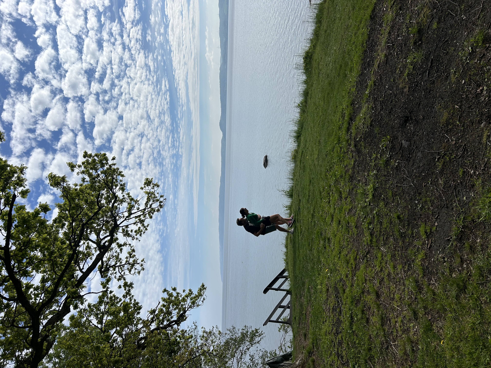

Så skapar du trygga sömnrutiner
Små förändringar i kvällsrutinen kan hjälpa både barn och föräldrar att hitta mer lugn.
5 min läsning

Råd, inspiration och stöd för vardagen som ny förälder.
Små förändringar i kvällsrutinen kan hjälpa både barn och föräldrar att hitta mer lugn.
5 min läsning

Tips för att göra måltiderna lite smidigare i vardagen.
4 min läsning

Så kan ni hitta små stunder av närhet även när vardagen förändras.
6 min läsning
Om vikten av vila, stöd och att inte behöva klara allt själv.
5 min läsning

Små aktiviteter som kan skapa mysiga stunder tillsammans.
3 min läsning